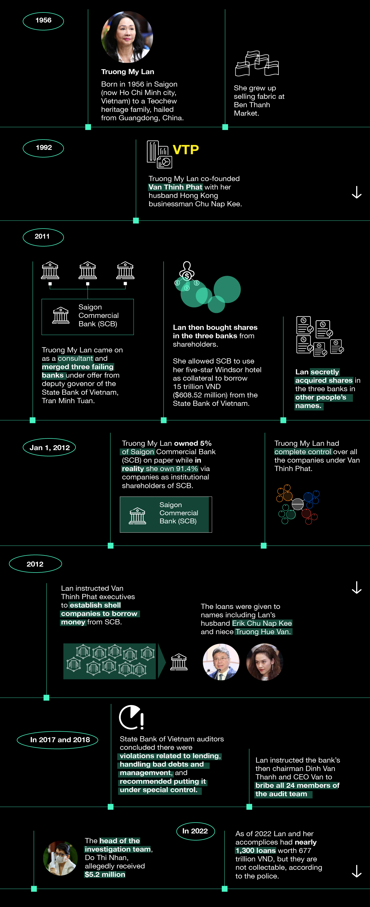

Feb 2025
What began as quiet whispers in banking circles—unexplained loan approvals, a complex web of shell companies, and an impossibly fast-expanding property empire—quickly unraveled into Vietnam’s largest financial fraud. By the time investigators pieced together the scheme, it was too late. Saigon Joint Stock Commercial Bank (SCB) had suffered catastrophic losses of approximately $44 billion.
The fallout led to the death sentence of Truong My Lan, the arrest of the bank's chairman, and a financial system left in turmoil.
The Timeline

Between 2012 and 2022, Lan and her associates created a network of fictitious businesses to secure massive loans, many of which were approved without proper collateral. To ensure compliance and evade scrutiny, Lan paid off regulators, auditors, and bank executives. Even the former chief inspector at Vietnam’s Central Bank was sentenced to life in prison for accepting a $5 million bribe to ignore red flags.
By 2022, this ecosystem had enabled Lan and her associates to siphon off over 50% of SCB’s total financial reserves, leading to catastrophic financial losses and triggering state intervention. The downfall of Van Thinh Phat exposed the fragility of Vietnam’s regulatory system,
Van Thinh Phat’s ecosystem was a vast and intricately structured financial network that allowed Truong My Lan to maintain her grip over multiple industries while orchestrating one of the largest financial frauds in history.
At the core of this ecosystem was Van Thinh Phat Group, the conglomerate that dominated Vietnam’s real estate sector. Over the years, the group expanded into a complex web of subsidiaries, financial institutions, ghost companies, and offshore entities, all of which played a role in facilitating the fraud.

Financial Institutions: Van Thinh Phat leveraged financial entities such as Saigon Joint Stock Commercial Bank (SCB), Tân Việt Securities, and Việt Vĩnh Phú Financial Corporation to move money, secure fraudulent loans, and manipulate financial transactions. SCB, in particular, became a key financial tool, issuing loans and approving transactions that were largely directed toward shell companies under Lan’s control.
Ghost Companies in Vietnam: A network of over 1,000 domestic shell companies was created to funnel funds, inflate asset values, and disguise illicit financial transactions. These companies provided the appearance of legitimate business operations while primarily serving to launder money and justify fraudulent loans.
Overseas Companies & Offshore Accounts: To further obscure financial activities, Van Thinh Phat established ties with offshore entities in tax havens, ensuring that embezzled funds were safely moved out of Vietnam. These offshore accounts played a crucial role in hiding cash outflows and investments abroad.
The Panama Papers reveal at least one connection between Truong My Lan and her husband. Currently, a Hong Kong property linked to their British Virgin Islands-based shell company is up for sale in an effort to repay outstanding debts.
Real Estate Holdings: Van Thinh Phat’s real estate empire, which included Times Square Saigon, Union Square, Sherwood Residence, Windsor Plaza Hotel, Capital Place, and the unfinished IFC One Saigon, was both a symbol of power and a financial mechanism. These properties were used as collateral for billions in loans and were often repurchased, transferred, or leveraged in questionable deals to create the illusion of liquidity and financial health.
Bond Market Manipulation:Van Thinh Phat issued billions of dollars in bonds, with An Dong Investment Group playing a pivotal role in repurchasing these bonds to balance financial statements. This deceptive practice made Van Thinh Phat appear solvent while in reality, funds were being funneled through its financial maze.
Saigon Commercial Joint Stock Bank (SCB)
The numbers tell a grim story. Once Vietnam’s fifth-largest commercial bank by assets, Saigon Joint Stock Commercial Bank (SCB)had its reserves drained through an intricate network of fraudulent loans. Prosecutors allege that Lan orchestrated over 2,500 loans—93% of SCB’s total loan portfolio—funneling money into shell companies under her control.
SCB’s High Interest Rates Fueled a Massive Financial Scheme
Saigon Joint Stock Commercial Bank (SCB) has long been known for offering some of the highest deposit interest rates in Vietnam, attracting a steady flow of savings from the public. However, these deposits became a crucial mechanism in a vast financial scheme orchestrated by businesswoman Truong My Lan.
Lan allegedly exploited SCB’s deposit system to withdraw large sums of money—sometimes as much as $3 million per transaction—through interbank loans, often without requiring collateral. To sustain this, SCB relied heavily on retailers’ deposits to secure additional funds from other banks. However, when the State Bank of Vietnam imposed caps on interbank interest rates and restricted borrowing to a maximum of 20% of a bank’s total finances, SCB faced mounting pressure.
To maintain liquidity and prevent mass withdrawals, the bank aggressively promoted high-interest offers to retail depositors, effectively luring them into keeping their savings with SCB. But as withdrawal requests began to exceed available funds, the situation spiraled further.
In a desperate bid to cover obligations, SCB allegedly misled depositors into signing legal documents under the pretense of traditional savings accounts. In reality, the fine print revealed they were purchasing bonds linked to shell companies controlled by Van Thinh Phat. As a result, countless investors unknowingly found themselves entangled in a fraudulent scheme.
Several affected depositors have since come forward, filing complaints over the deception, bringing the scandal into the national spotlight. Authorities are now investigating the full extent of the fraudulent activity, with potential legal repercussions looming over SCB and its key figures.
Vạn Thịnh Phát's Bond Scheme
An Đông INVESTMENT JSC (An Đông), also owned by Truong My Lan, played a crucial role in the financial scheme. The bond debt recorded on Van Thinh Phat’s account highlights a significant part of the operation.
An Dong repurchasing bonds from Van Thinh Phat suggests an effort to window-dress the financial statements or create the illusion of financial stability.
“From a financial analysis standpoint, if these two companies are interconnected, it could serve to balance the financial statements or create the illusion of Van Thinh Phat’s prosperity. A bond functions as a lending agreement, and An Dong allowed Van Thinh Phat to borrow funds under the pretense of a thriving business. This arrangement could have been strategically implemented either to adjust the balance sheet or to present Van Thinh Phat as financially robust on paper.” Dr Linh Nguyen, Associate Professor of Banking and Finance, Former Head of Treasury of Saigonbank, the first private bank in Vietnam, said.
“A bond typically has a five-year term. If Van Thinh Phat was unable to repay An Dong, it should have faced bankruptcy, yet it did not. This strongly suggests that the two entities were financially interlinked, operating from the same pool of funds.” Dr Nguyen added.
A Real Estate Empire Built on Fraud
Ho Chi Minh city is the most populous and largest commercial city in Vietnam.
This is some of Van Thinh Phat's properties in District 1, 3, and 5
In District 1, certain areas are known as "golden" and "diamond" zones due to their exceptionally high property values and prime central location. The majority of Van Thinh Phat's commercial buildings are concentrated within this prestigious area.
These buildings offer the pinnacle of luxury living for Vietnamese residents in Ho Chi Minh City, home to the prestigious six-star Reverie Hotel and high-end fashion boutiques such as Tiffany & Co., Bentley, and Piguet.
These highlighted buildings and their surroundings mark the origins of Truong My Lan’s journey, which began in Chinatown. Starting as a fabric vendor, she expanded her empire to own the largest market in Chinatown, along with hotels and residential housing developments.
According to the the Communist Party of Vietnam's publicationTruong My Lan primarily utilized real estate investments as the primary channel for laundering money within the country and collateral for loans.
Besides the real estate porfolio in prime locations in the heart of Ho Chi Minh city, Truong My Lan’s also has extensive property holdings in other areas and cities across Vietnam, including a $6 billion Mũi Đèn Đỏ project and Capital Place building in Hanoi (capital city of Vietnam). These acquisitions were fueled by embezzled funds, further entwining Vietnam’s financial and real estate sectors in the scandal.
A Turning Point for Vietnam’s Financial System
The Communist Party’s "Blazing Furnace" anti-corruption campaign, led by former Secretary-General Nguyen Phu Trong, has now turned its focus toward banking institutions. Authorities are tightening oversight, implementing stricter lending regulations, and considering more transparent practices for private banks.
“The common red flags in corporate governance are cross-ownership between banks and firms (as borrowers),” Dr Nguyen said.
Critics argue that Vietnam’s financial system is still vulnerable to cronyism and weak regulatory enforcement. The SCB case exposed deep structural flaws that, if unaddressed, could enable another financial disaster.
What does this mean for foreign investors?
“International regulatory bodies show signs of increased scrutiny of banking activities in Vietnam, such as KYC (Know Your Customer) regulations,” Dr Nguyen observed.
For foreign investors, the SCB scandal is a stark warning. While Vietnam remains one of Asia’s fastest-growing economies, governance risks must be carefully navigated. Stronger oversight, due diligence, and anti-corruption safeguards will be crucial in restoring confidence in the banking sector.
As Truong My Lan faces execution, with the first trial concluding in a death sentence and a second case now underway, her downfall signals the end of an era of unchecked financial power and political influence. But whether Vietnam can genuinely reform its financial system in the wake of this scandal remains the billion-dollar question.